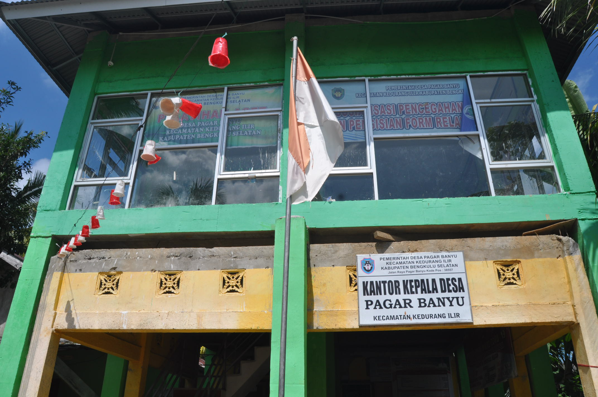
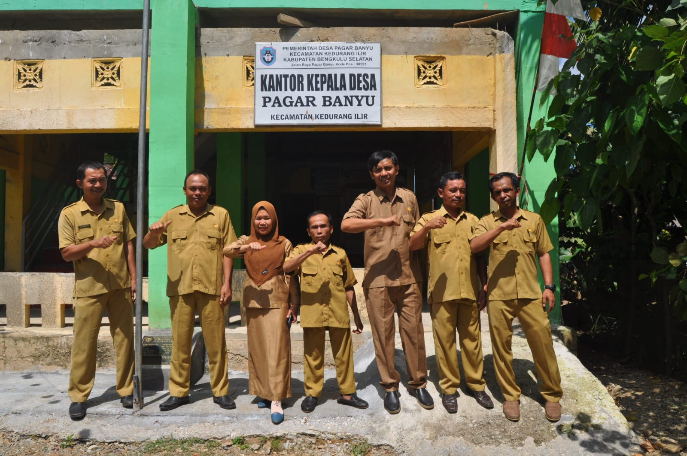
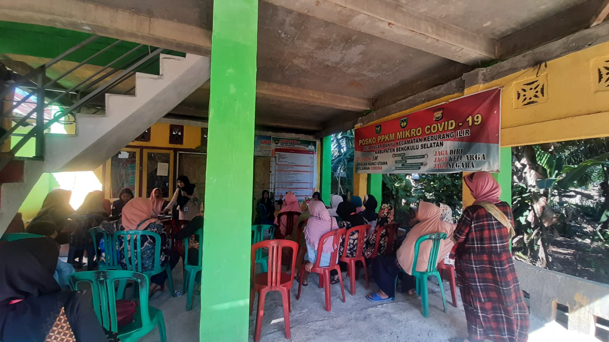
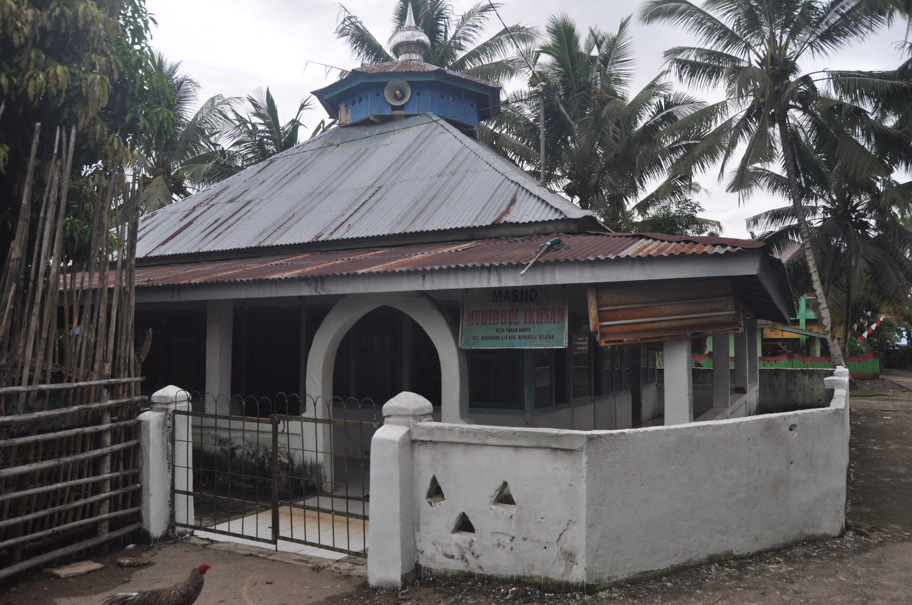
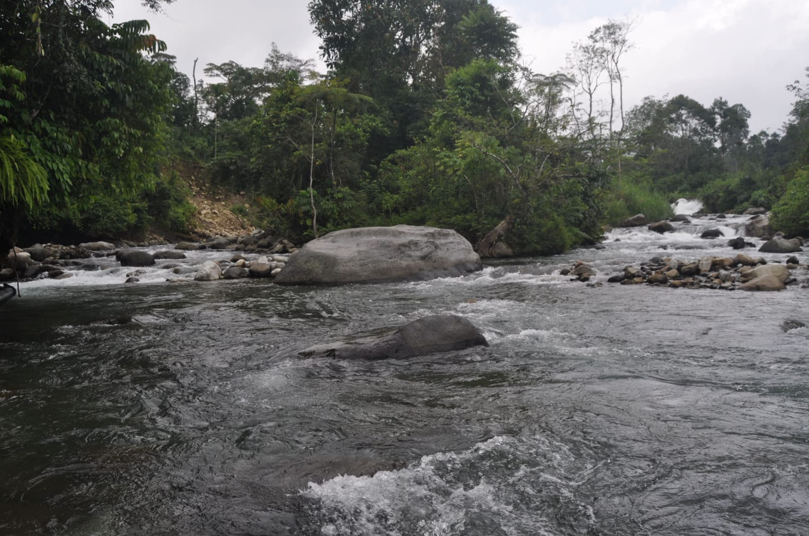

Desa Pagar Banyu, Kec. Kedurang Ilir, Kab. Bengkulu Selatan
Follow us:
Pagar Banyu
Home
Profil Desa
Pemerintahan
Galeri
Galeri
Home
Galeri Desa

Kantor Desa Pagar Banyu

Perangkat Desa Pagar Banyu

Kegiatan Posyandu Desa Pagar Banyu

Masjid Muhibbul Ikhsan Desa Pagar Banyu

Sungai Di Desa Pagar Banyu